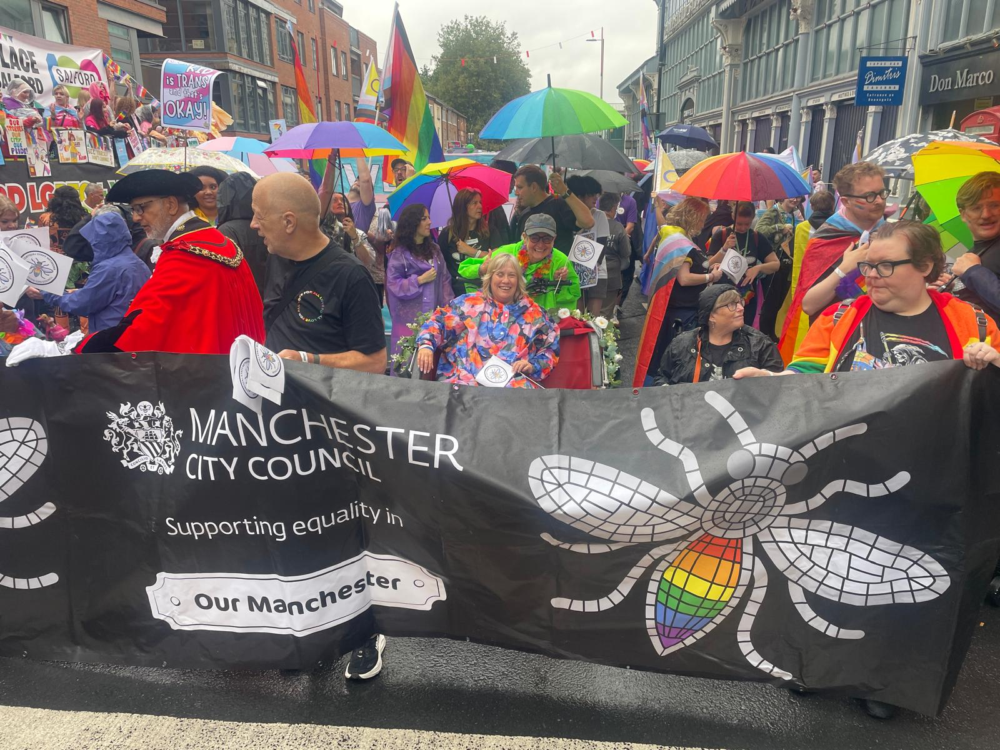

Our new family cargo bike is on its way!
- 🚚 Thanks to funding from TfGM, we've ordered an Estarli Longtail electric cargo bike, capable of carrying up to three children, with a maximum combined weight of 110kg.
- 🚚 And the best bit? It will be completely free to hire for one week!
- 🚚 We want to give local families the chance to try out an electric cargo bike and discover how it could make everyday journeys easier, cheaper and more fun - less time stuck in traffic jams and more time enjoying the journey!

The Community will ride!
- 🚴 Thanks to the Your Neighbourhood Fund, we will hold our 2nd Annual Community Ride at some point in late September/early October.
- 🚴 We've also secured the services of Luke Shepherd to document the event with another of his amazing films.
- 🚴 We're waiting for the installation of Bailey Bridge, which was delayed to late September. Once we hear definitive news about the bridge, we'll promote the ride on a centrally located banner, posters in key locations and on social media.
- 🚴 As always, nothing can rival the power of word of mouth - so when we have secured a date, we'll tell you... and you can tell everyone!

Belvoir Green Community Fun Day
- 🌿 Tom piloted the trishaw for Belvoir Green's community fun day on 10th August.
- 🌿 It was a day organised by Taskforce, Friends of the Earth, Keep Manchester Tidy, Noor Masjid Mosque and Manchester City Council.
- 🌿 It was great to see so many parts of the community in Levenshulme coming together and having a go on the trishaw!


Trishaws at Ride and Stride, and Family Fun Days
- 🚲 The trishaw has been a real vehicle for joy and celebration at several community events this summer!
- 🚲 Chris took the trishaw for a spin at the Ride and Stride Festival at Seymour Park on 12th August, giving people the chance to experience the joy of cycling together.
- 🚲 Tom brought the trishaw along to Merseybank Family Fun Day, giving rides to local residents and helping bring plenty of smiles to the day.
- 🚲 And finally, Glynis spent the day at Old Moat Family Fun Day, taking lots of happy locals out for a spin.
- 🚲 It's fantastic to see the trishaw becoming part of so many local events and helping people of all ages get out, connect with their community and enjoy the simple pleasure of a bike ride.

Leaflets delivered for Live at Wythenshawe
- 🎵 Albert has delivered leaflets to Wythenshawe residents for us for the last couple of years for the Live @ Wythenshawe music festival.
- 🎵 He is always super reliable and flexible when a few extra leaflets need to be delivered.
- 🎵 We're grateful that Live @ Wythenshawe continues to choose us to deliver the letters and permits for this local live music event, which continues to grow and gain success each year.
- 🎵 Albert earned a spot on the guest list for seeing Pulp play as a thank you from the company!

RHS Cycle Hire Scheme
- 🚲 On 6th August, Manchester Bikes invited Chorlton Bikes along for the launch of the RHS Bridgewater Bike Hire Scheme.
- 🚲 Reg attended with Salford City Council and other cycling active travel dignitaries.
- 🚲 The service is operated by Manchester Bikes. To access the bikes, users must download and use the dedicated community bikeshare app developed by MOSA.
- 🚲 The bikes are free to hire and users get 30% off the entrance fee.

Manchester Climate Ready
- 🌍 After meeting Ellie Bradley from Manchester Climate Ready, we should soon find out if our application to be a member has been ratified by their board.
- 🌍 We will be able to link up with other organisations across Manchester who have signed up to their mission to make Manchester a zero-carbon, climate-resilient city.
- 🌍 We will also be able to shine a light on our work and encourage other partners to use bike deliveries in the city.


Trishaw takes on Pride!
- 🏳️🌈 Our volunteer and founder, Glynis, had the pleasure of taking Cllr Tracey Rawlins - Disability Advocate for the Bee Network and Deputy Leader of Manchester City Council - out on the trishaw for the Pride parade!
- 🏳️🌈 Despite the rather terrible weather, they had a fantastic time celebrating Pride together.
- 🏳️🌈 We love seeing the trishaw bringing people together and helping make Manchester's events more accessible for everyone.